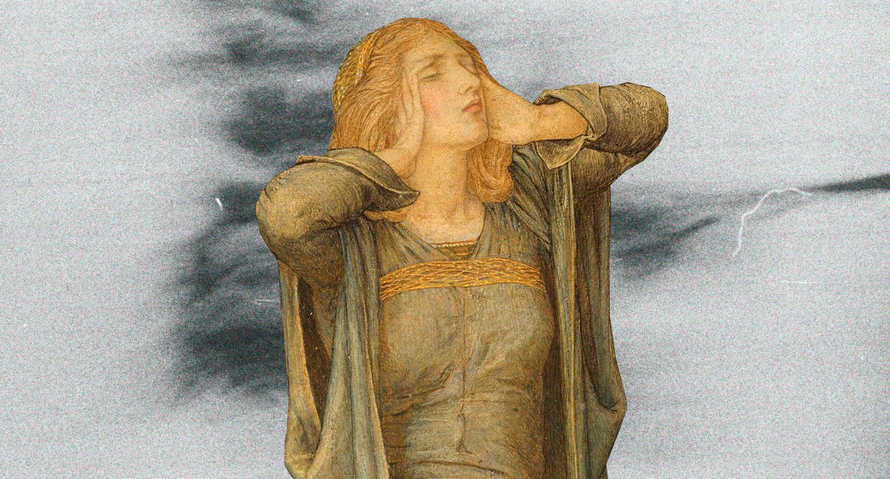

Чому виникає депресія?
Причини можуть бути різноманітні. Немає чіткого сценарію, за яким розвивається депресія — усе залежить від того, як ви переносите стрес, яка у вас генетика та які шкідливі звички ви маєте. Іноді депресія виникає через сукупність різних чинників.
Дослідження доводять вплив нейротрансмітерів на розвиток депресії. Нейротрансмітери, зокрема норадреналін та серотонін, — це хімічні речовини, які беруть участь у сполученні нервових клітин. Власне, дисбаланс цих речовин у мозку і може спричиняти депресію. Втім, є і такі дослідження, що ставлять під питання теорію хімічного дисбалансу: низка вчених стверджує, що хімічний дисбаланс — не причина депресії, а її наслідок.
Часто депресію провокують гострі стресові події: смерть або каліцтво близьких, ДТП, розлучення, втрата роботи, історична турбулентність — як-от ізоляція під час Covid-19 або війна. Іноді такою стресовою подією можуть стати пологи або адаптація до новонародженої дитини. Також депресія може виникнути у людей з не дуже розвинутими соціальними зв’язками, у яких немає підтримки близьких, друзів — або психологічної допомоги профільних спеціалістів.
Важливим чинником появи депресії можуть бути особливості вашої психічної конституції і характеру. Якщо ви болісно переносите стрес, то цілком можливо, що якщо стресових ситуацій побільшає, ви впадете в депресію. Схильність до депресії також може передаватися у спадок. Якщо у вашому роду були самовбивці або хворі на хронічну депресію, то у вас більша ймовірність захворіти на цей недуг.
Як зрозуміти, що у мене депресія?
Клінічна депресія — комплексний діагноз, який має складну симптоматику. Тому діагностувати її може тільки психіатр. Але є перелік симптомів, які дадуть зрозуміти, що слід звернутися до лікаря:
- ви відчуваєте безпорадність;
- у вас почастішали спалахи агресії, ви частіше дратуєтесь через дрібниці;
- ви втратили інтерес до роботи, фізичних навантажень, інтелектуальних та креативних видів діяльності; джерела задоволення — їжа, серіали, секс, — також перестають приваблювати;
- у вас знизився або посилився апетит;
- вас стали тривожити речі, які раніше не викликали таких почуттів;
- ви почали думати про суїцид.
У вас може бути кілька з цих симптомів, а можуть бути й усі. Також депресія може супроводжуватись і фізичними симптомами — наприклад, болем у животі, серці чи спині, розладами шлунку, закрепами тощо.
Як відрізнити депресію від хандри?
Деякі з описаних вище симптомів депресії можна відчувати і без привʼязки до якогось діагнозу. Наприклад, коли людина втрачає роботу або переживає розлучення чи втрату близьких, вона може почуватися пригніченою, тривожитися, погано спати та звинувачувати себе в усіх проблемах. Але клінічна депресія набагато важча за простий сум або хандру.
По суті, психіатр встановлює діагноз «депресія» виходячи з особистого спілкування з пацієнтом. Депресія має різні стадії — є багато методик визначення, яка саме стадія у вас. Щоб зрозуміти, наскільки все серйозно, ви можете пройти опитувальник за госпітальною шкалою депресії та тривоги (HADS), шкалою DEPS або шкалою Бека — усі ці методики використовують професійні психіатри.
Але, знову ж, жодне тестування в інтернеті не поставить вам діагноз — це може зробити тільки лікар. До того ж депресія буває різних типів, і лікування якогось конкретного типу може призначати тільки спеціаліст.
Я почуваюся погано саме восени чи взимку. Це може бути депресія?
Так. Один із видів депресії — сезонний афективний розлад. Цей недуг характерний тим, що його симптоми починаються та закінчуються в певну пору року — часто вони припадають на осінь та зиму.
Досі невідомо, від чого саме виникає сезонна депресія. Є кілька теорій, які пояснюють, чому так може відбуватися:
- Зміна біоритмів. Коли сонячного світла меншає, наш біологічний годинник перелаштовується. Від цього може змінюватися настрій, сон та гормональний фон. Якщо ви не можете адаптуватися до цих змін, ваш стан буде погіршуватися.
- Хімічний дисбаланс у мозку. Через зменшення кількості сонячного світла у холодні сезони в організмі падає вироблення серотоніну — це важливий гормон, який прямо впливає на психологічний фон.
- Дефіцит вітаміну D. Вітамін D сприяє підвищенню рівня серотоніну. Водночас на кількість цього вітаміну також впливає сонячне світло. Відповідно, менше сонця — менше вітаміну D — менше серотоніну.
- Збільшення рівня мелатоніну. Ця хімічна речовина впливає на наш сон та настрій. Коли нам не вистачає сонячного світла, організм може виробляти забагато мелатоніну. Через це людина почувається сонною, втомленою та знесиленою.
Проте всі ці чинники можуть вказувати на звичайну осінню хандру — вона не потребує медикаментозного лікування і глибокого пропрацювання з психотерапевтом. Однак, якщо ви відчуваєте, що вже не здатні контролювати симптоми і вони суттєво впливають на ваше життя, це привід записатися до психіатра.
Які ще бувають види депресії?
У Міжнародній класифікації хвороб можна знайти десятки різновидів депресії. Ось ті, що найчастіше трапляються на практиці:
Легкий, середній та важкий депресивні епізодиВласне, саме тут актуально говорити про ступінь тяжкості вашої депресії. Ступені відрізняються одна від одної кількістю симптомів, а також їхньою тривалістю, впливом на життя та вашою здатністю їх контролювати.
Наприклад, якщо ви не можете змусити себе встати з ліжка або зовсім не маєте ані сил, ані бажання підтримувати соціальні звʼязки, виконувати робочі обовʼязки та робити елементарні повсякденні справи, а також всерйоз замислюєтеся про самогубство, скоріш за все, йдеться про важкий депресивний епізод.
Депресивний або тривожно-депресивний розлад особистостіДепресивний епізод може тривати від кількох тижнів до двох років. Якщо симптоми зберігаються довше, вам можуть діагностувати хронічну депресію — депресивний розлад особистості. У випадку, якщо ваша депресія супроводжується постійною тривогою, у вас може бути тривожно-депресивний розлад особистості.
Це зовсім не означає, що ви тепер постійно почуватиметеся погано. В хронічній депресії бувають ремісії — їх можна підтримувати роками за допомогою медикаментів та психотерапії.
Біполярна депресіяВиникає у людей, що страждають на біполярний розлад особистості. Пацієнт з таким розладом переживає періоди манії та депресії з перервами на нормальний настрій між ними.
Манія — це стан, протилежний депресії. Людина в такому стані зазвичай продуктивна і соціально активна, відчуває прилив енергії, потребує менше сну, швидко розмовляє та часом важко фокусується на чомусь. Після манії приходить період депресії, коли знесилений пацієнт не здатен ухвалювати рішення та продовжувати справи, які розпочав у стадії манії.
Психотична депресіяЦе важка форма депресії, яка супроводжується галюцинаціями, маревними ідеями, манією переслідування, підміною фактів, різкою зміною настрою, неконтрольованою агресією. Пацієнти, у яких діагностують психотичну депресію, схильні до самогубства більше, ніж інші, оскільки їхня свідомість затьмарена симптомами психозу.